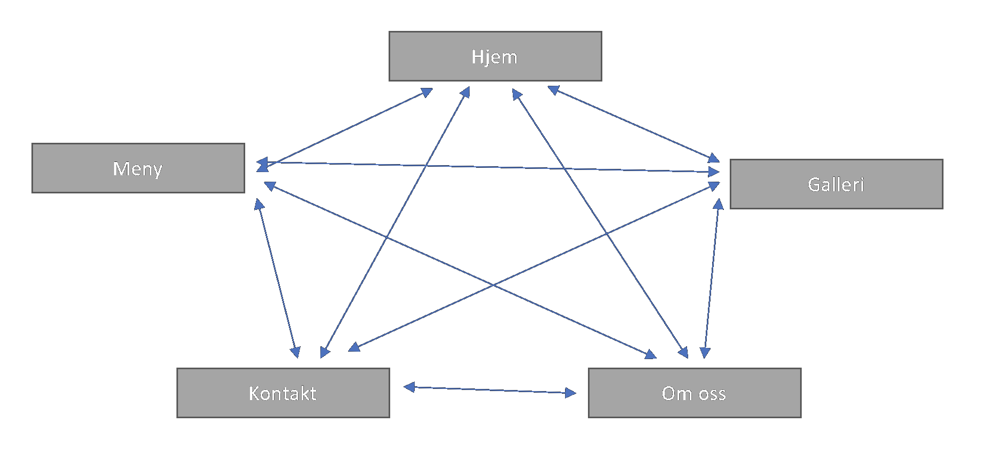
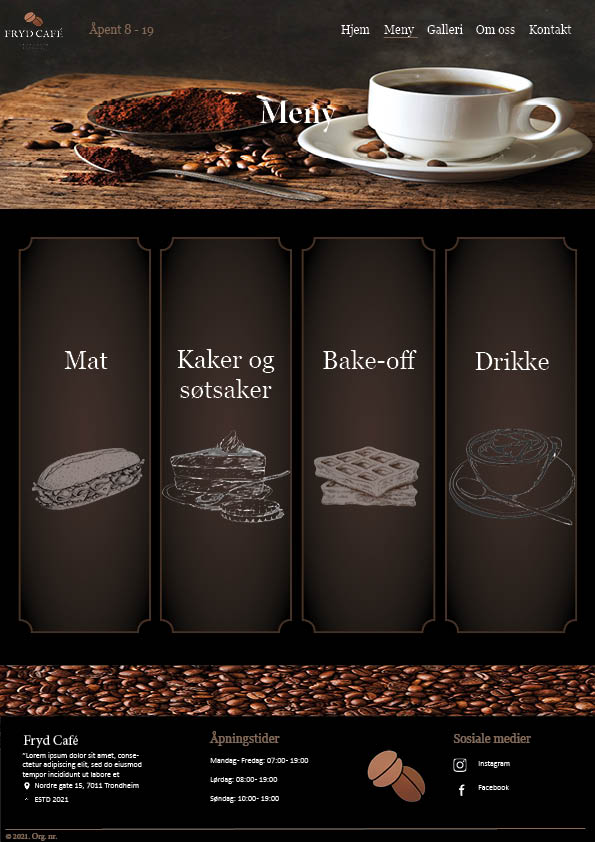
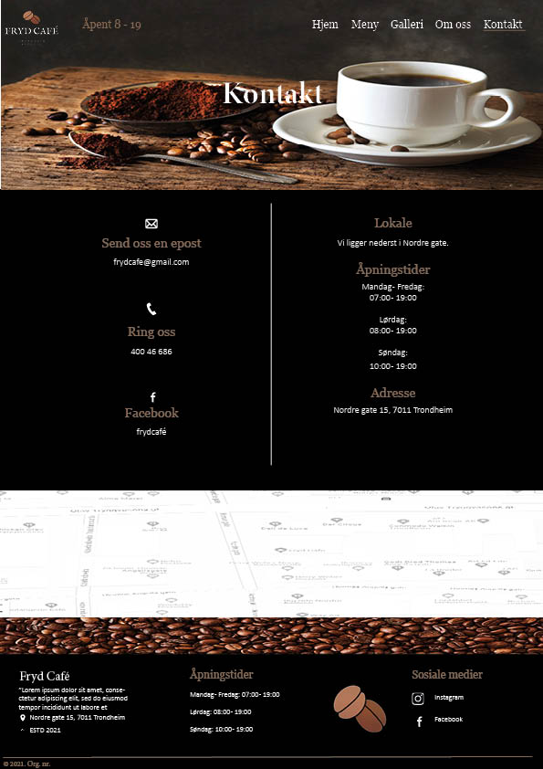
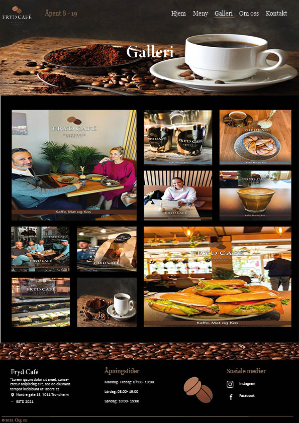
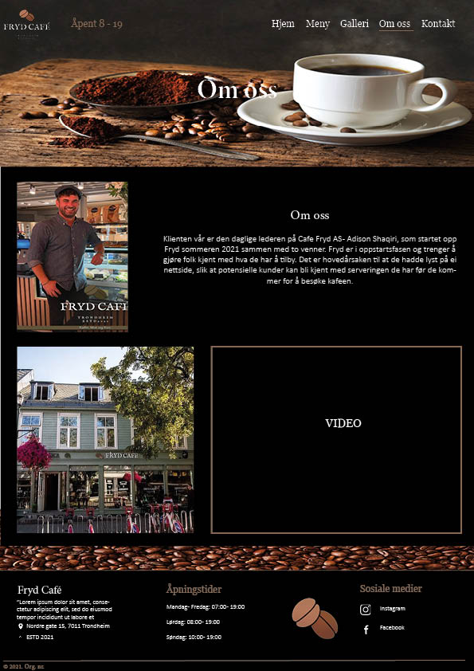

Klienten vår er den daglige lederen på Cafe Fryd AS - Adison Shaqiri, som startet opp Fryd sommeren 2021 sammen med to venner. Fryd er i oppstartsfasen og trenger å gjøre folk kjent med hva de har å tilby. Det er hovedårsaken til at de hadde lyst på ei nettside, slik at potensielle kunder kan bli kjent med serveringen de har før de kommer for å besøke kafeen.
Hensikten med nettsiden vi lager for Fryd Cafe, er å gi dem en plattform hvor potensielle nye kunder, så vel som tidligere kunder, kan gå inn å se hva kafeen har å tilby (meny), hvor den befinner seg i Trondheims store by og annen informasjon om kafeen (som f.eks. kontakinformasjon).
Målet er å lage en brukervennlig, enkel og appellerende nettside som gir kafé-glade mennesker lyst til å ta turen innom kafeen.
Navigasjonen på nettsiden vil være enkel. Man vil hele tiden ha tilgang til de forskjellige sidene (Hjem, Meny, Kontakt, Om oss) øverst på siden. Dette vil være en "navigation-bar" som hele tiden følger brukeren. Hvis man scroller ned på en siden vil menyen fortsatt være tilgjengelig på toppen av vinduet. I tillegg vil vi markere siden du trykker på med en annen bakgrunnsfarge når du holder musen over knappen. Ved å trykke på logoen til Fryd Cafe AS så vil du også bli tatt tilbake til hjem-siden.
Som vist i figur er alle sidene koblet til hverandre. Strukturen vi planlegger til nettsiden er ganske simpel. Vi ønsker å vise hva Cafe Fryd tilbyr, hvem de er og hvor de holder til. For å få til dette på en oversiktlig måte må de ulike sidene være nært tilknyttet hverandre. Fra menyen skal man enkelt kunne hoppe over til informasjon om Cafe Fryd hvis man skulle ønske det. Og for eksempel motsatt, har interessen blitt fanget under "Om oss" skal det gå raskt å hoppe over til menyen.
 Figur 1: Navigasjon av sidenMed tanke på at Fryd Café ikke har en hjemmeside fra før, er det universale designet viktig for å være innbydende for målgruppen, men også for potensielle fremtidige kunder. Vi har dermed bestemt at det er viktigst å fokusere på å lage nettsiden innbydende med enkelt design. Hovedsiden skal fokusere på å gi kunden et godt førsteinntrykk ved å ha en oversikt over den viktigste informasjonen. Først et innbydende bilde, en liten invitasjon til deres meny side, kort beskrivelse av hvem de er og hva de står for, og til slutt en footer med deres lokasjon, åpningstider og sosiale medier. Fryd Café hadde 1 krav som var farger på nettsiden, svart, brun og hvit. Navigasjonsfeltet er også viktig for å hjelpe kunden å finne informasjonen de trenger. De ulike kategoriene er:
Figur 2: Mockup av hovedsiden
Den spesifikke stylingen for nettsiden som gjelder for alle sidene finnes nedenfor:
Hjem-siden er hovedsiden man kommer til når man besøker Fryd Cafe AS sin nettside. Dette er førsteinntrykket til kunden, og er dermed viktig at er veldig bra, men også oversiktelig og enkelt å forstå. På denne siden vil vi som man kan se på mockup-bildet, ha et lysbilde-show som automatisk bytter bilde. dette er da en av våre 4 Javascript-funksjoner (dynamicbanner.js). Headeren vil være på toppen av siden når du scroller ned, og denne vil vi også bruke js for å hente til de 4 andre sidene. I footeren vil vi gjøre det samme, men vi vil også ha automatisk oppdaterte åpningstider som sier om cafeen er åpen akkurat nå (openingtime.js)
Figur 3: Mockup av hovedsiden
På meny-siden vil vi presentere maten og drikken som selges hos Fryd Cafe AS. Vi har allerede fått noen bilder hvor man har lister med pris/vare, så vi vil kunne bruke disse bildene, eller lage egne lister i html. Vi vil også ha en form for sortering og filter slik at man kan velge og finne mat basert på forskjellige variabler og krav. Dette vil være JavaScript som vi kan implementere.
Figur 4: Mockup av meny siden
På denne siden vil det ikke være veldig mye tekst, men litt enkel informasjon om Fryd Cafe AS (Telefonnummer, epost, adresse osv.). I tillegg vil det være en form for kontaktskjema, enten da ved utfylling av et skjema, eller ved videresending til Facebook Messenger chat. Vi vil også linke opp både Facebook og Instagram-sidene til Fryd Cafe AS. I tillegg til det nevnte så vil vi også ha en kart-funksjon med et markert punkt i Google Maps slik at kunden enkelt ser hvor cafeen ligger. Dette vil da innebære litt JavaScript.
Figur 5: Mockup av kontakt siden
Som nevnt tidligere vil vi lage en egen side hvor Fryd Cafe AS kan legge ut forskjellige bilder. Dette vil da både kunne være bilder som de har lagt ut på nettsiden, i tillegg til bilder som hentes fra Instagram/Facebook. For kunden vil det kunne være fint å se både lokalene til Fryd Cafe, men også forskjellige bilder av mat og drikke de serverer. Designet på galleri-siden vil være slik som designet på de andre sidene, med bruk av de samme fargene og fontene. På denne siden vil det derimot ikke være så mye tekst som på de andre sidene, da det er bilder som er i fokus. Man vil selvfølgelig kunne ha en bildetekst for å beskrive hvert bilde.
Figur 6: Mockup av galleri siden
Om oss-siden vil være en informativ side hvor både Fryd Cafe AS og de ansatte kan bli presentert. I og med at Fryd Cafe AS er et relativt nytt selskap så er det ikke så veldig mange som kjenner til de. Dermed vil det være greit for kunden å kunne lese litt om de.
Figur 7: Mockup av om oss siden
Fryd ønsker at det blir litt animasjon/ dynamikken på nettsiden, og vi tenkte å realisere dette ved å lage en pop-up header. Vi skal ha en pop-up header som kommer opp når man blar ned nettsiden. Pop-up headeren skal inneholde navigasjonsbar og logoen til Fryd.
På meny siden blir det bilder med "menygruppe", som mat, kaffe osv. Nå du klikker på de bildene vil en liste med produkter som hører til denne gruppen komme opp. Vi skal bruke JS liste/hashmap for å implementere dette.
I footeren skal vi ha en div med åpningstid den dagen du besøker nettsiden. Vi lager en funksjon som oppdaterer åpningstid automatisk, klokkeslettet og "Har åpent" når Fryd har åpent, og ordet "Stengt" når de har stengt.
Det blir google map på nettsiden. Den skal implementeres med JS, men er ikke noe vi lager selv, så vi teller ikke dette med i de 4 js-funksjonene vi måtte ha med.
På hovedsiden skal vi ha en dynamisk banner, som skal bla gjennom fryd sine bilder, automatisk eller ved klikk.
Vi skal bruke følgende skjema og mappestruktur for å lagre filer og bilder. Det kan være noen små endringer ang. bilder vi skal bruke, da det er noe som skal diskuteres sammen med klienten litt senere.
Bilder med navn img. er copyright-bilder vi får fra vår klient, disse bildene vil bli brukt til å vise produkter, mediebilder osv. av det Fryd tilbyr. Menu. bilder er de bildene som skal brukes for å beskrive meny til Fryd, de skal brukes på meny siden. Den siste typen av bilder vi skal bruke er decorative. Det er dekorative open source bilder uten copyright som skal brukes som decorative content.
Planen er å ha 4 forskjellige javadcript-funksjoner. Dette innebærer js som gjør at man kan filtrere og søke på forskjellige mat/drikke på "meny"-siden og js som oppdaterer åpningstider i footeren, slik at det alltid står om cafeen er åpen i nåtid. Videre har vi også js på fremsiden med et galleri som automatisk bytter bilde. Det siste vi skal ha er js som gjør at headeren popper opp når man scroller på siden. De forskjellige funksjonene med ansvarlig person er beskrevet litt lenger nede her.
Alle nødvendige bilder osv. vil bli levert til oss innen den 15. oktober. Alle gruppemedlemmer vil samarbeide og jobbe med både JS, HTML og CSS. Følgende personer skal ha hovedansvar for sin del og leveringsfristen er satt til den 1.november.
| Filnavn | Beskrivelse | Ansvarlig | Frist |
|---|---|---|---|
| homepage.html | Homepage til nettsiden | Eva | 1.november |
| menu.html | Side med meny til fryd | Ida | 1.november |
| gallery.html | Side med bilder fra Fryd cafe, produkter osv. I tillegg til bilder fra Fryd sine sosiale medier. | Andreas | 1.november |
| about.html | Side med informasjon om Fryd, når de grunnlagt osv. | Jonas | 1.november |
| contact.html | Side med kontaktinformasjon til Fryd, telefonnummeret, link til facebooksiden osv. | Kir | 1.november |
| popupheader.js | Javascript som implmenterer pop-up header funksjonen | Kir | 1.november |
| menufilter.js | JavaScript som implementerer meny-søk funksjonen. | Jonas | 1.november |
| openingtime.js | JavaScript som implementerer åpningstider på hovedsiden som oppdaterer seg automatisk. | Andreas | 1.november |
| dynamicbanner.js | JavaScript som implementerer banner som skal inneholde galleri med bilder man kan bla gjennom. | Eva og Ida | 1.november |
| style.css | CSS fil som inneholder alle styling til nettsiden. | Alle gruppemedlemmer, men Andreas skal kontrollere og implementere CSS slik at den er lik på alle 5 sider. | 1.november |
| Testing | Nettsidesjekk, gjennomgang av alle funksjoner, validation osv. | Alle gruppemedlemmer | 8.november |